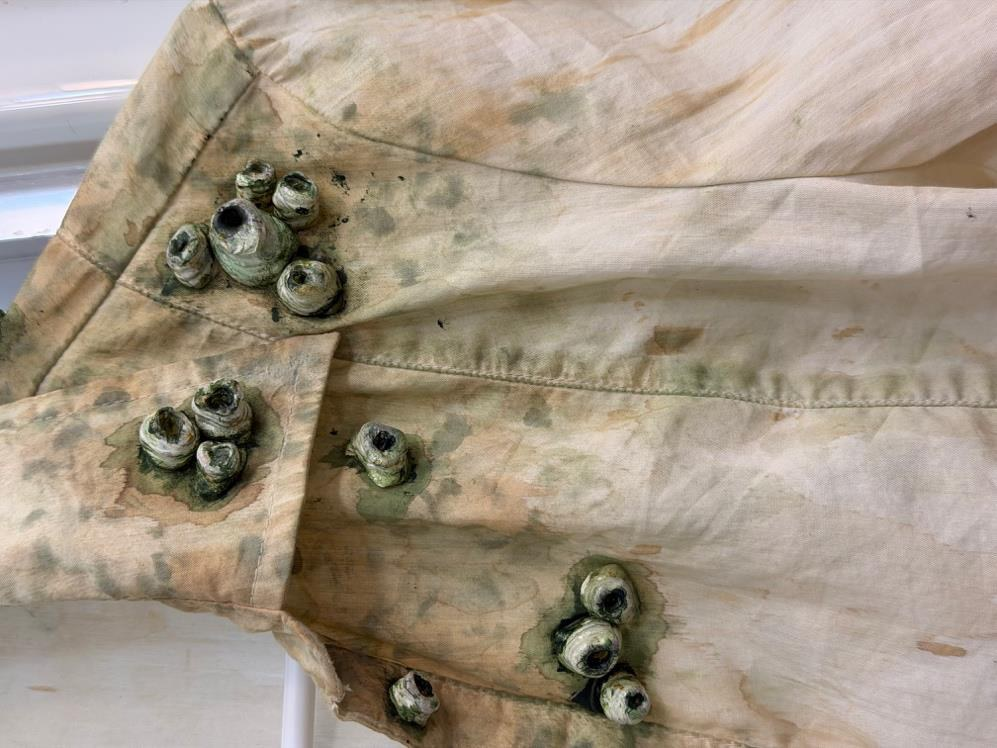
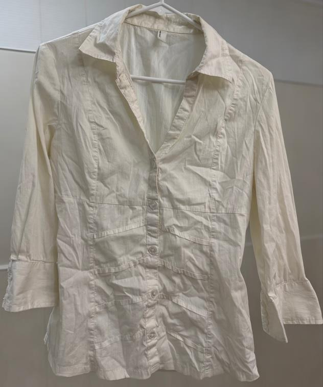
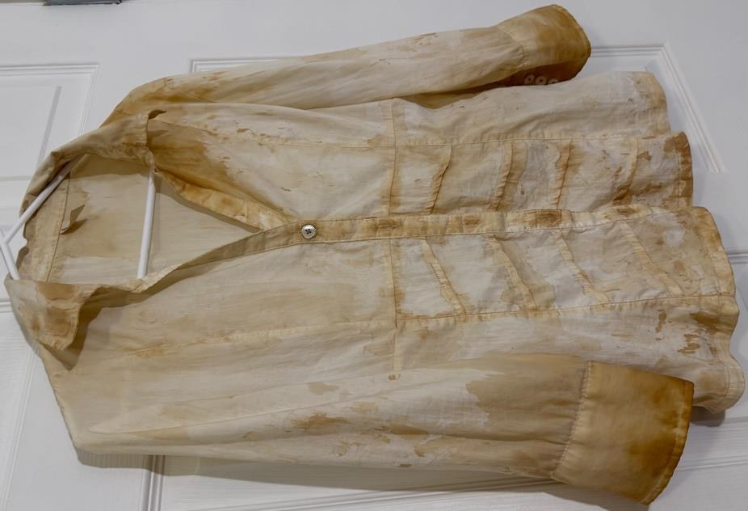
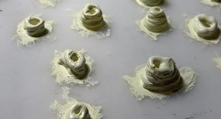
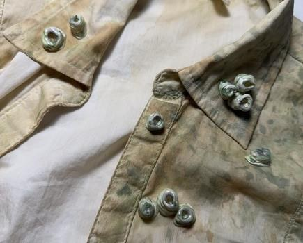
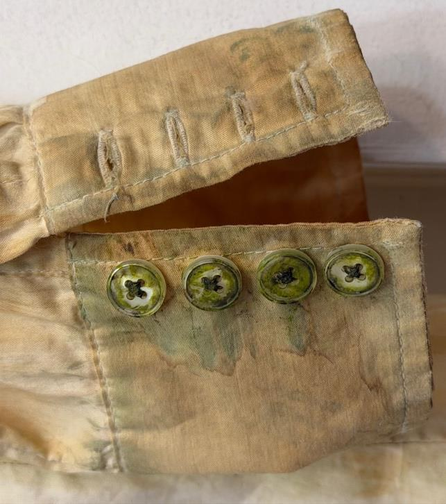
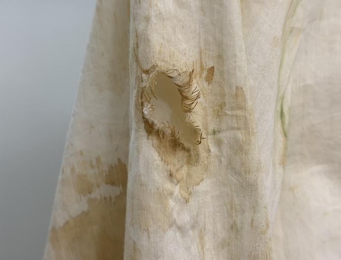
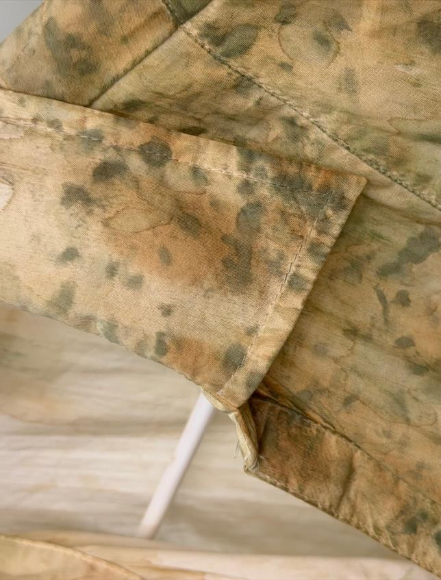
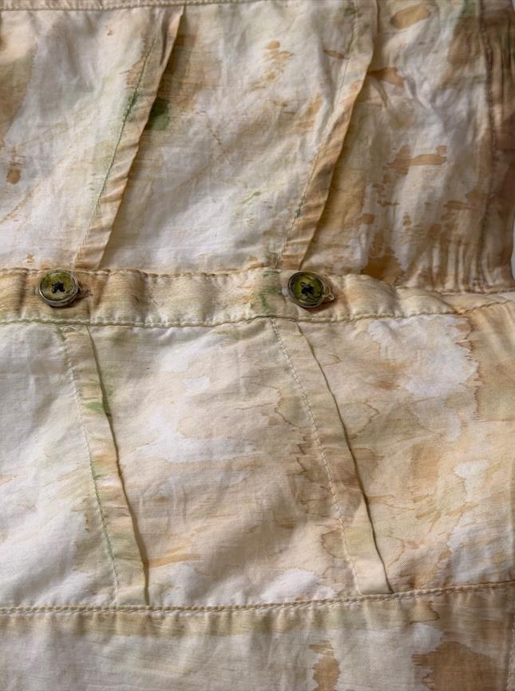

The Drowned Passenger
Costume Design & Textile Distressing
A garment reclaimed by the sea.

OVERVIEW
The idea.
The Drowned Passenger is a cinematic costume breakdown project inspired by the cursed crew of the Flying Dutchman in Pirates of the Caribbean. The objective was to transform an ivory button-up blouse into a garment that tells the story of a supernatural shipwreck. Physical damage represents contact with broken timber and rigging; coffee staining suggests sediment-rich water; and layered green pigments and sculpted barnacles evoke marine growth. Rather than distressing the fabric randomly, I placed each effect according to the imagined history of its wearer and the construction of the blouse. The final garment retains its fitted silhouette, wide cuffs and layered front panels while demonstrating how surface treatment, controlled abrasion and dimensional effects can communicate character and atmosphere.
A closer look.








PROCESS
From research
to realization.
I began by assessing the original blouse and identifying seams, folds, collar and cuffs as believable areas for sediment, wear and marine growth. Before working on the visible garment, I tested tea, diluted instant coffee, acrylic mixtures, seam-ripper cuts and three nail files. Coffee produced the most effective staining, while the selected nail file allowed controlled abrasion. I applied coffee unevenly across hems, cuffs and seams, then layered four to five green tones around the collar and shoulder to suggest algae. A localized sleeve tear was developed through cutting and thread extraction. I also aged the pearlescent buttons so they would no longer look disconnected from the distressed surface. Finally, I sculpted irregular barnacle-like forms from hot glue, painted their raised ridges and recessed centers, and attached them in asymmetrical clusters. Dark pigments around their bases helped integrate the three-dimensional pieces into the fabric. Every treatment was adjusted to preserve the blouse silhouette and maintain a readable story of shipwreck, submersion and transformation.
REFLECTION
What I learned.
This project taught me that believable costume breakdown begins with the character's history rather than with decorative damage. Testing materials before applying them helped me understand how different staining, cutting and abrasion techniques behaved on the fabric. The main challenge was making hot-glue barnacles feel like part of the garment instead of separate objects; layered colour and shading were essential. I also learned that the original buttons needed weathering to support the same visual narrative. The finished blouse demonstrates how ordinary materials can create a character-specific fantasy costume. I particularly enjoyed the combination of hands-on experimentation, storytelling and attention to detail, and I would continue refining durability and attachment techniques in future work.